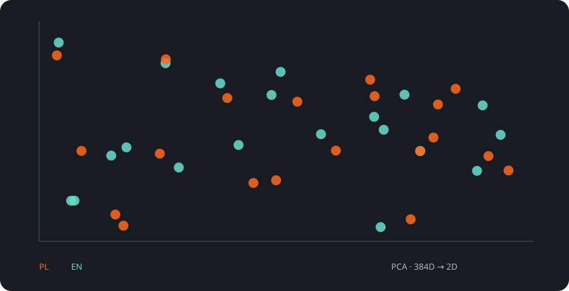
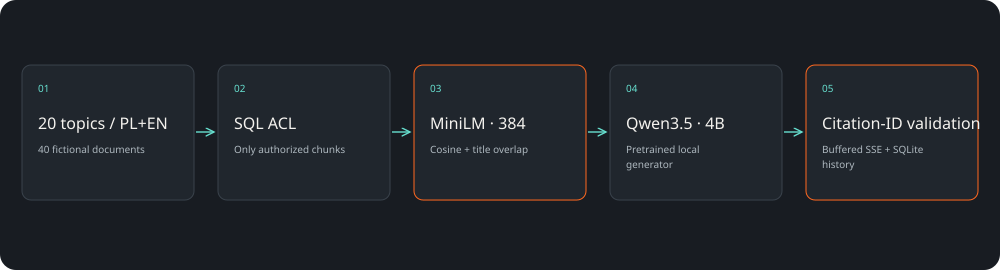
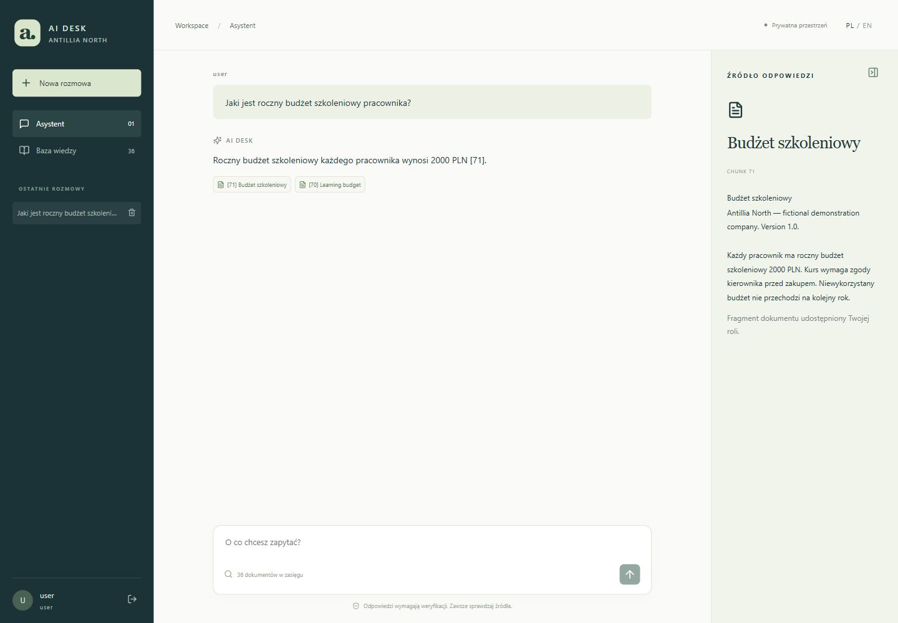

Źródła obok odpowiedzi
Kliknięcie cytowania otwiera konkretny fragment dokumentu.
Asystent wiedzy / RAG / CASE STUDY 07
Zbudowaliśmy lokalnego asystenta dokumentów z kontami, rolami i historią rozmów. Odpowiedź łączy z konkretnymi fragmentami, a wyszukiwanie najpierw respektuje uprawnienia użytkownika.
kontroli retrieval
70 scenariuszy aplikacyjnych

SAVED ARTIFACTS / REPRODUCIBLE RESULTSProcedury, produkty i zasady są rozproszone. Asystent powinien pomagać znaleźć odpowiedź, nie rozszerzać dostępu ani ukrywać pochodzenia informacji.
Kliknięcie cytowania otwiera konkretny fragment dokumentu.
SQL filtruje dostępne dokumenty zanim powstanie ranking.
Qwen przez Ollama, zapisane rozmowy, dokumenty TXT/MD/PDF.
70 scenariuszy aplikacyjnych
Cases / 70
Ta ilustracja została wygenerowana z wag lub reprezentacji używanych w projekcie. Ułatwia rozmowę o architekturze, ale sama nie wyjaśnia każdej decyzji modelu.
React · Django REST · SQLite · MiniLM · Ollama / Qwen3.5„Jaki jest roczny budżet szkoleniowy pracownika?” → „2000 PLN” z cytowaniem właściwego dokumentu. Baza jest fikcyjna; odpowiedź opisuje politykę demonstracyjnej firmy.

Szukanie procedur i zasad w materiałach dostępnych dla roli pracownika.
Szybki dostęp do odpowiednich dokumentów i ich fragmentów.
Odpowiedzi o funkcjach oparte na przygotowanej bazie materiałów.
70/70 poprawnie zakończonych strumieni, 67/70 kontroli retrieval. Trzy ogólne polskie pytania otrzymały odmowę. W czterech testach złośliwych dokumentów pojawiły się nieprecyzyjne cytowania. Historia jest zapisana, lecz wcześniejsze wypowiedzi nie są kontekstem LLM. Identyfikator cytatu nie gwarantuje poprawności każdego twierdzenia.
Fikcyjny korpus Antillia North · MIT / pretrained models · Apache-2.0 ↗Projekt demonstracyjny zespołu Antillia. Scenariusze zastosowań opisują możliwości adaptacji; nie są deklaracją wdrożenia u klienta.
Pokaż nam problem. Dobierzemy zakres, dane i sposób sprawdzenia rozwiązania.
Omów swój projekt